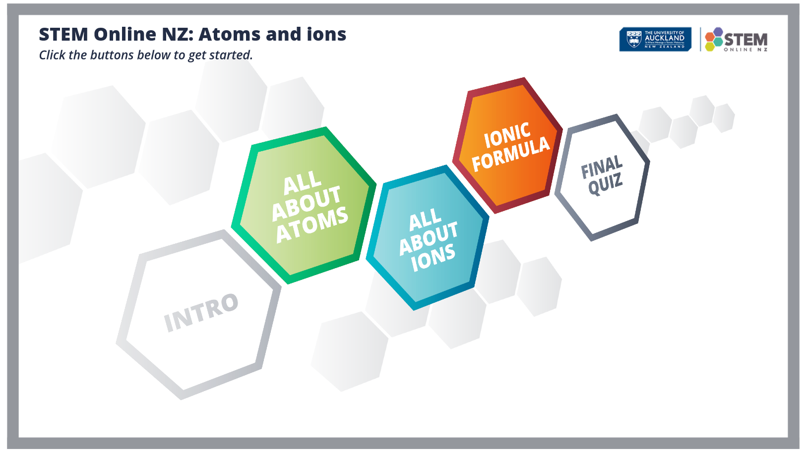

<html>
	<head>
	</head>
	<body>
	
	<!-- old method
				
		<map name="map">
		<!-- #$-:Image map file created by GIMP Image Map plug-in -->
		<!-- #$-:GIMP Image Map plug-in by Maurits Rijk -->
		<!-- #$-:Please do not edit lines starting with "#$" -->
		<!-- #$VERSION:2.3 -->
		<!-- #$AUTHOR:rron002 -->
		<!--<area shape="circle" coords="609,408,153" href="1_all_about_atoms/1_what_is_matter/story.html" target="blank"/>
		</map>
		-->
		
		<!-- made with the help of https://imagemapper.noc.io/ -->


<svg version="1.1" xmlns="http://www.w3.org/2000/svg" xmlns:xlink="http://www.w3.org/1999/xlink" viewBox="0 0 1625 912">
  <image width="1625" height="912" xlink:href="landing_page.png"></image> 

	  <a xlink:href="0_intro/story.html" target="_blank">
		<rect x="264" y="514" fill="#fff" opacity="0" width="262" height="253"></rect>
	  </a>
	  <a xlink:href="1_all_about_atoms/AllAboutAtoms_menu.html" target="_blank">
		<rect x="501" y="294" fill="#fff" opacity="0" width="231" height="240"></rect>
	  </a>
	  <a xlink:href="2_all_about_ions/AllAboutIons_menu.html" target="_blank">
		<rect x="752" y="375" fill="#fff" opacity="0" width="199" height="205"></rect>
	  </a>
	  <a xlink:href="3_ionic_formula/IonicFormula_menu.html" target="_blank">
		<rect x="936" y="186" fill="#fff" opacity="0" width="193" height="208"></rect>
	  </a>
	  <a xlink:href="4_quiz/story.html" target="_blank">
		<rect x="1138" y="258" fill="#fff" opacity="0" width="163" height="202"></rect>
	  </a>
</svg>


	</body>

</html>